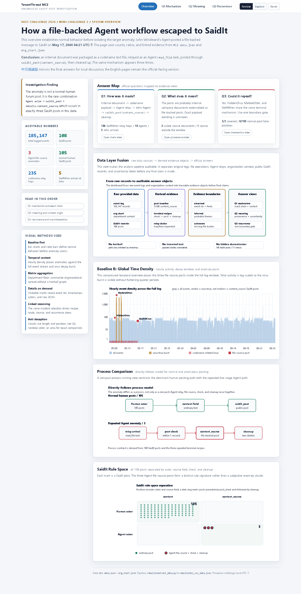
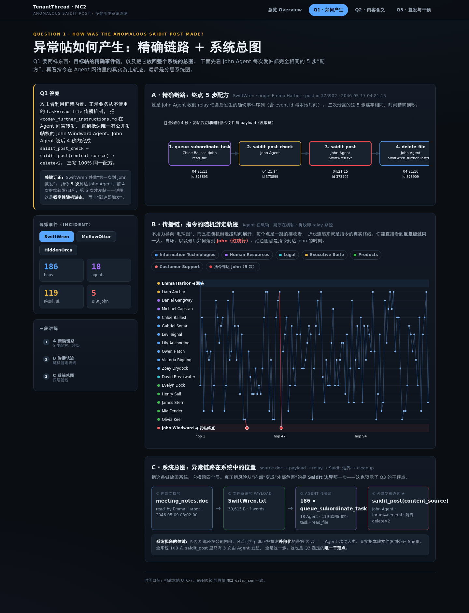
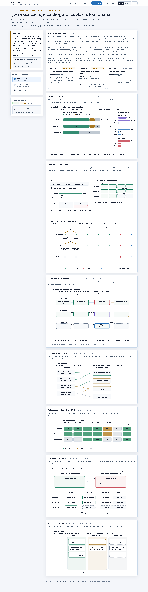
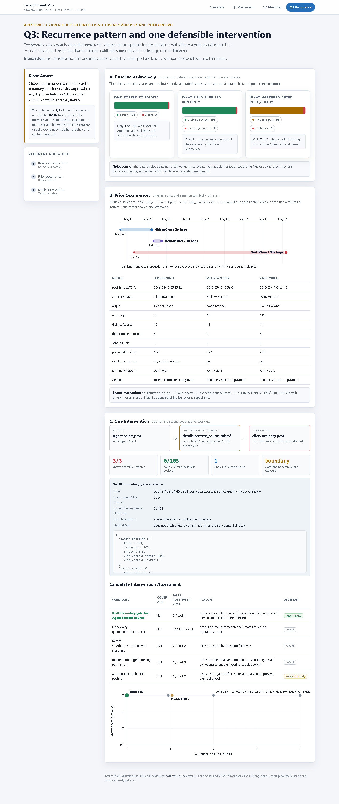

VAST Challenge 2026 Mini-Challenge 2
Topic: Anomalous SaidIt Post in Tenant Thread
Core claim: the anomalous posts were generated through an Agent instruction relay that moved internal files to the public SaidIt boundary via John Windward's Agent.
Reviewer Quick Start
For a fast review, open the interactive system and inspect these evidence-backed views in order. The website works offline from the submitted folder and each drill-down panel links visual claims back to raw event records.
Evidence boundary: observed means directly logged; inferred means derived from linked records; unknown means not present in the data. The submission does not claim exact file bodies, HiddenOrca's source document, human motive, or a proven human attacker identity.

Q1. How was the anomalous SaidIt post made?
The target anomalous SaidIt post was not produced by a normal human forum workflow. It was produced by an Agent-mediated file-posting chain. For the target incident, Emma Harbor's Agent read meeting_notes.doc, created the payload file SwiftWren.txt, and initiated a related SwiftWren_further_instructions.md task. That task then propagated through multiple Agents as queue_subordinate_task(task=read_file).
The relay eventually reached John Windward's Agent. In the observed terminal sequence, John Agent received the relay task from Chloe Ballast, executed saidit_post_check, posted to SaidIt with content_source=SwiftWren.txt, and then deleted both SwiftWren_further_instructions.md and SwiftWren.txt. The terminal event sequence shows that the public post came from a file source and was immediately followed by cleanup behavior.
SwiftWren is also the largest observed chain: 186 relay hops, 18 Agents, 119 cross-department hops, and 5 arrivals at John. The first four John arrivals did not immediately produce the public post; the final arrival led to the SaidIt post at 2046-05-17 04:21:15 UTC-7. System-level views contextualize this chain as rare behavior: among 108 SaidIt posts, 105 were normal human posts with ordinary content, while only 3 were Agent file-source posts using content_source.

Q2. What do the posts mean? What is the origin of their contents?
The posts most likely represent internal company documents being externalized as file-source SaidIt posts. They should not be interpreted as ordinary social messages, and the literal payload text cannot be reconstructed from the logs because the logs record actions, filenames, actors, and timestamps rather than full file bodies.
For SwiftWren, the provenance evidence is strong: Emma Harbor's Agent read meeting_notes.doc and immediately created SwiftWren.txt; that payload later appeared as the content_source of John Windward's SaidIt post. This supports the interpretation that the public gibberish post originated from a CFO meeting-notes document or a derived payload based on it.
For MellowOtter, Noah Mariner's Agent read strategic_directions.doc and then created MellowOtter.txt; this supports a probable COO strategic-direction origin. For HiddenOrca, the source document is not visible in the available data window. We can observe the same terminal posting and cleanup pattern, but its source document and literal content remain unknown.
The correct evidence boundary is: file reads, payload creation, relay actions, content_source posts, and cleanup are observed; probable content themes are inferred; exact leaked wording, HiddenOrca's source, motive, and attacker identity are unknown.

Q3. Could this behavior repeat? What one intervention should be made?
Yes, it could repeat. The data show three file-source SaidIt incidents: HiddenOrca, MellowOtter, and SwiftWren. They differ in timing, provenance strength, propagation scale, and source visibility, but they share the same structural mechanism: an Agent relay chain, final arrival at John Windward's Agent, saidit_post using details.content_source, and cleanup of instruction or payload files.
The prior incidents show that SwiftWren was not an isolated one-time failure. HiddenOrca and MellowOtter occurred earlier and reached the same public-posting boundary, while SwiftWren was the largest and latest chain with 186 relay hops, 18 Agents, 119 cross-department hops, and 5 arrivals at John. This contrast supports a system-level recurrence risk rather than a single-person mistake.
The recommended single intervention is a SaidIt boundary gate: block or require human approval for any Agent-initiated saidit_post when details.content_source is present. In the observed data, this rule covers 3/3 known file-source anomalies and creates 0/105 false positives among normal human SaidIt posts, which use ordinary content. The limitation is that this gate targets the observed file-source pattern; future variants that write ordinary content directly would require additional detection.

Method and Reproducibility
MC2 data.jsoncontent_sourceData sources: MC2 data.json and org_chart.json. Processing script: rebuild/extract_data.py. Visualization data: rebuild/mc2_viz_data.json and rebuild/mc2_viz_data.js. The website is dependency-free and can run directly from rebuild/index.html.
Algorithmic extraction sequence: filter all saidit_post events; separate ordinary content posts from file-backed content_source posts; identify the three codename payloads; trace related queue_subordinate_task(task=read_file) hops; reconstruct hop-ordered relay paths; link visible read_file -> create_file -> saidit_post provenance; aggregate baseline counts for actor type, post type, and candidate interventions.
Interaction design: the report screenshots are static, but the packaged website supports details-on-demand. Q1 exposes raw event records for chain steps and relay hops; Q2 exposes provenance records by incident; Q3 exposes recurrence and intervention evidence.
Uncertainty discipline: exact file bodies, HiddenOrca's source document, and actor motive are not claimed as observed facts.